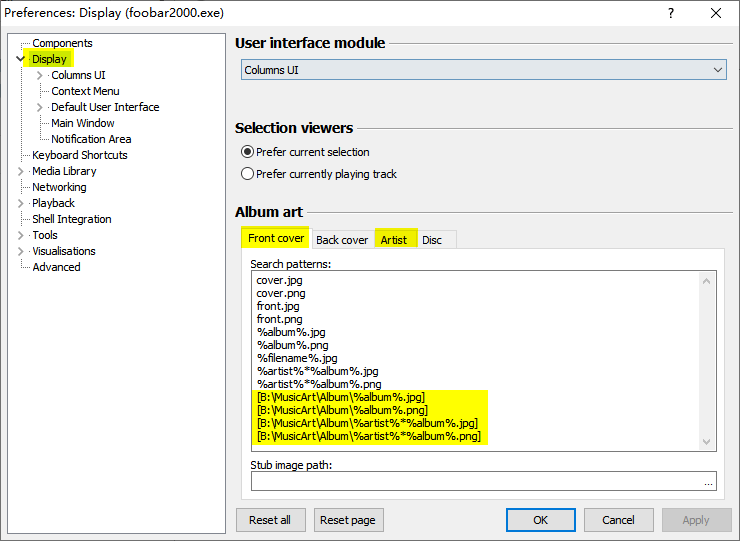
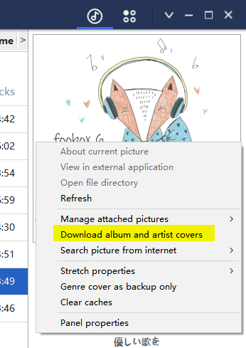

Cover setting and download
foobox supports embedded covers and external covers. Cover Browser Panel can cache the covers to disk drivers to faster the readings. All covers shall be jpg or png format.
[Embedded cover]
No need extra setting for embedded covers, except if you want below:
If the covers of your tracks are embedded in the tag "disc" instead of "front", you can check below option in foobox settings (A little more system resource consuming).
[External covers]
Preset paths of covers can be set in foobar2000 Preferences.
Open foobar2000 Preferences dialog (Menu-- File--Preferences，or control+p, or the button in foobox settings panel)
Above is the front cover setting page, highlight paths are preset values of foobox. Another page is artist cover.
Default front & artist cover paths are located under foobar2000\MusicArt\Album and the Artist directories.
Benefit of external covers put in the preset folders is that foobox Cover Browser Panel can cache the covers to optimize the loading speed.
If you modify above foobar2000 cover paths, you also need to modify the settings of Cover Browser Panel.
Open foobox settings, goto the page of Cover Browser Panel.
The paths here shall be consistent with the settings in foobar2000 Preferences (without file names)
[Genre cover]
Support muti-language matching, you can modify Foobar2000\themes\foobox\js_common\Genre.js. It is very easy.
Genre covers are located by default in foobar2000\MusicArt\Genre directory.
[Directory cover]
cover.jpg or cover.png is the directory cover. Cover Browser Panel will use it while group by directory.
[Download alubm and artist cover]
Onekey download button is provided on topbar of Cover Browser Panel, it will download the missing album and artist covers in batch.The source is from a Chinese music host.
Ensure tags of the songs: %album% and %artist% (%album artist%) are intact and correct to download the covers.
Right click menu (Album Mode and Artist Mode) provide download cover independantly. This is forced download, will overwirte exsiting cover.
Artist cover will random download one of the cover in the server.
Coer Panel at right: right click button also provide same download function. If album or/and artist cover exsiting, the context menu items will not be available.
---The End---